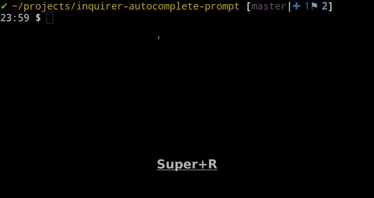
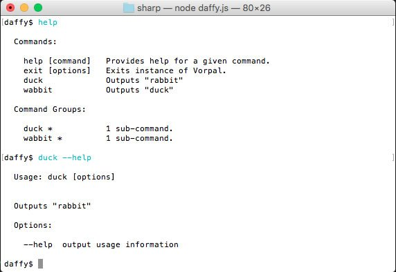
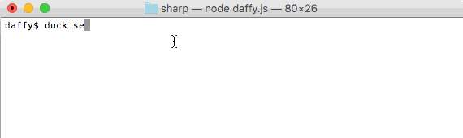

| toolkit | The complete solution for command-line interfaces, inspired by Ruby's commander | arguments processing |
| utility | Command-line prompt | prompt |
| utility | A collection of common interactive command line user interfaces. | error feedback, asking questions, parsing input, validating answers, hierarchical prompts |
| toolkit | A delightful toolkit for building Node-based command-line interfaces (CLIs) in TypeScript or modern JavaScript | parameters, patching, filesystem, system, http, prompt, print, semver, strings |
| framework | Framework for building interactive CLI applications. Based on commander.js and inquirer.js | required/optional args, prompts, generator, piped commands, persistent command history, auto-gen docs/help, autocomplete |
| framework | Framework for building CLIs | Flag/Argument parsing, prompts, fast, generator, testing helpers, auto-gen docs/help, plugins, hooks, TS, auto-updating installers, autocomplete |
| utility | A helper library for creating CLI tools with subcommands | subcommands, arguments processing, bash-completion |
| utility | A library to help building interactive command line tools by parsing arguments and generating an elegant user interface | subcommands, arguments processing, bash-completion |
| utility | A tiny CLI helper, | arguments processing |
var program = require('commander')
program
.version('0.1.0')
.option('-p, --peppers', 'Add peppers')
.option('-P, --pineapple', 'Add pineapple')
.option('-b, --bbq-sauce', 'Add bbq sauce')
.parse(process.argv)
console.log('you ordered a pizza with:')
if (program.peppers) console.log(' - peppers')
if (program.pineapple) console.log(' - pineapple')
if (program.bbqSauce) console.log(' - bbq')
console.log(' - %s cheese', program.cheese)

cli-uxprompt
A toolkit for building Node-based command-line interfaces (CLIs) in TypeScript or modern JavaScript
import { GluegunToolbox } from 'gluegun'
module.exports = {
name: 'generate',
alias: ['g'],
run: async (toolbox: GluegunToolbox) => {
const {
parameters,
strings: { lowerCase, upperFirst },
template: { generate },
print: { info },
prompt: { ask }
} = toolbox
// text input
const askBranchExample = { type: 'input', name: 'branch', message: 'What would be an example for branch naming convention?' }
// ask a series of questions
const { branch } = await ask([askBranchExample])
const { first: project } = parameters
const fileName = 'CONTRIBUTING.md'
const target = `${lowerCase(project)}/${fileName}`
await generate({
template: `${fileName}.ejs`,
target,
props: { project: upperFirst(project), branch },
})
info(`Generated ${fileName} file at ${target}`)
},
}